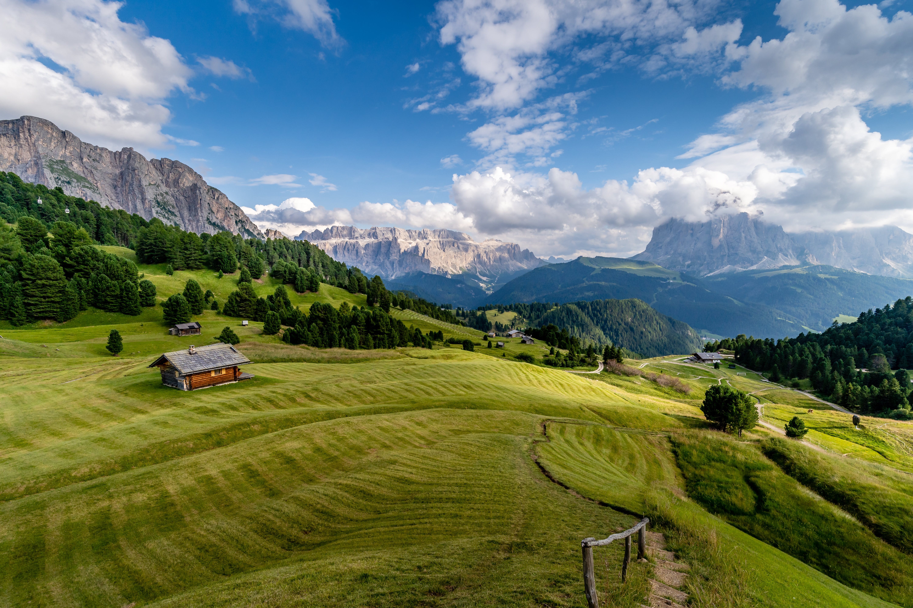

Nature is incredible!

Nature is the ultimate source of our living. Both living and non-living things include nature, and everyone is interdependent, which helps maintain the ecosystem. Plants, animals, and humans all depend on nature for their survival. It supplies oxygen, sunlight, soil, water, and other necessary components. But deforestation has been the primary cause of global warming, destroying nature. In addition to exploiting excessive natural resources, other industries pollute the environment with toxic gases and chemicals. It is now essential to reduce biological damage, reuse things, and recycle existing materials to create new ones.
People from all over the world should join forces to relieve pressure on the environment and restore its balance. It is now the essential aim to serve nature with utmost care to save our nature from hazards and threats.
Everything around us constitutes nature!
Everything we see around us constitutes nature, including the sun, the moon, trees, flowers, fruits, human beings, birds, animals, etc. In nature, everyone depends on one another to keep the ecosystem healthy. For survival, every creature is interrelated and reliant on one another.
Humans, for example, rely on nature for their survival, and nature provides us with oxygen, food, water, shelter, medicines, and clothing, among other things. Many shades may be seen in nature, contributing to the planet’s beauty. Along with humans, animals and birds also find their habitat and means of survival in nature. Therefore, it is essential to take proper care of our nature to maintain a healthy life.
Nature has existed long before humans, and it has always taken care of and nurtured humanity. Human survival is impossible without nature, and humans must recognize this. It also provides us with the water and nourishment we need to do so.
Cheating nature means cheating yourself!
With the increasing population, the threats towards nature are increasing. With the growth in population, the resources are now depleting. Excessive levels of air and environmental pollutants add to the mix. Industrial waste, unrestricted vehicle use, illicit tree cutting, wildlife hunting, nuclear power plants, and a slew of other factors are contributing to the disruption of natural systems.
The extinction of species as enormous as dinosaurs and the survival of animals as tiny as ants have been documented in history. It is unavoidable to remember, among other things, that nature can play both a protective and destructive role. Natural disasters, pandemics, and natural crisis scenarios have demonstrated the need for humans to maintain the subtle balance of nature in order to ensure the continuation of life on Earth for the benefit of future generations.
Conclusion
We can conclude that nature is the most powerful thing on our planet that binds everything together. Any malfunctioning in even the smallest processes can cause a lot of damage to life on earth. Our selfish deeds towards nature can harm us and our future generations. It is important to keep nature growing for the existence of humanity on the planet.
Protecting and preserving nature calls for your attention. It is a two-way process – if you take care of mother nature, it will continue to care of your needs.
Finally, nature possesses a great transforming potential that is responsible for the operation of life on Earth… "It is significant because it aids in the functioning of human existence and provides us with natural resources to live a healthy life.”